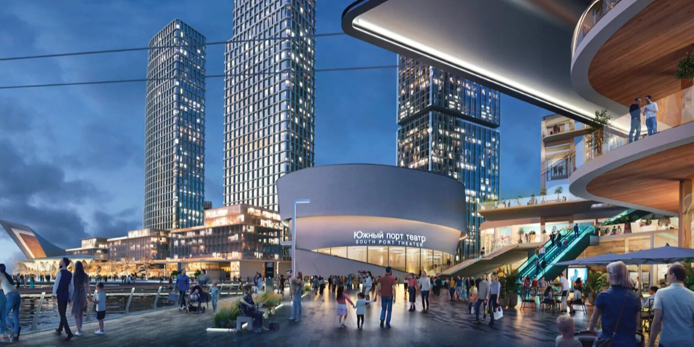

Транспортная система Москвы — это основа города как мегаполиса. Ведь каждый день в столице проходят миллионы перемещений: от поездок по Москве на автомобиле до использования общественного транспорта. Мегаполис с таким количеством людей просто не может существовать без эффективной транспортной сети.
Москва — крупнейший рынок жилой недвижимости в России, и её жилищная инфраструктура продолжает меняться. Учитывая рост населения и рост миграции, задача создать комфортное жилье для горожан в условиях ограниченности пространства остаётся актуальной.
Москва активно развивает свою энергетическую инфраструктуру, делая упор на энергоэффективность и устойчивое развитие. Речь идет не только о тепло- и водоснабжении, но и о внедрении инновационных технологий, которые позволяют сделать город более энергоэффективным.